New Jersey
A sage-green shed, a woodpile and the chopping stump.


Three backyard axe-chopping games. One brief, three AI coding harnesses, plus a fourth, Gemini, still being built. Now with Sergey, two backyards, trees you can walk up to and chop, and online co-op for two with proximity voice chat.
 These buttons open the latest builds: Assets v2 plus two-player co-op for Codex, Claude and DeepSeek; the classic builds are still playable. Click in a game to start audio. WebGL 2 and a desktop mouse recommended.
These buttons open the latest builds: Assets v2 plus two-player co-op for Codex, Claude and DeepSeek; the classic builds are still playable. Click in a game to start audio. WebGL 2 and a desktop mouse recommended.
Start here
A short tour of Chopperman: meet Sergey and see the three Assets v2 games.
New
The Codex, Claude and DeepSeek games now have two-player online co-op, with optional voice chat that gets quieter the farther apart you are. All three got the same co-op brief, then the same voice chat brief. Gemini’s co-op round has not run yet.
Connection notes. Co-op is peer-to-peer (WebRTC). It uses the free PeerJS cloud server only to introduce the two browsers, and STUN to find a route between them. There is no relay (TURN) server, so players behind a strict NAT, such as some office, school or mobile networks, may not be able to connect. It works best in two different browsers or on two devices. Two tabs of the same browser on one machine also work for a quick try.
| Harness | Game | Build | Automated check | FPS NJ low / Tiraspol low / Tiraspol high | Co-op + voice rounds |
|---|---|---|---|---|---|
| Codex CLI | Backyard: Find the grain | d9215ba | passed | 52.7 / 40.7 / 16.7 | 3 runs, 3.73 h, $3.78 |
| Claude Code | Backyard Log Splitter | c7b88ab | passed | 48.6 / 47.1 / 0.5 | 3 runs, 4.36 h, $17.25 |
| DeepSeek Harness | American Split | 550fa30 | passed | 17.8 / 24.5 / 2.2 | 3 runs, 1.19 h, $0.81 |
The check ran on each merged build after release. It replays the Assets v2 check, plays a full two-player co-op session including every voice chat step, and runs the voice module’s 360 unit checks. It ran in headless Chrome with software rendering and no GPU, so FPS are far below what a real graphics card gives. Voice was tested with a simulated microphone, and the two players were linked by an in-page loopback, not a real network. Round costs are in the totals under The bill. Claude’s are reported by the tool, and Codex’s and DeepSeek’s are token-priced (list-price equivalents).
New
All three games got the same upgrade: a shared pack of real 3D assets, which each harness built into its own game. The Play buttons on this page open these v2 builds, which now also include online co-op. The classic builds are still one click away.
A sage-green shed, a woodpile and the chopping stump.
A walled backyard with the cathedral’s gold domes on the skyline.


Key art: AI-generated (GPT) illustrations of Sergey, not in-game footage. The in-game screenshots are on the cards below.
About these numbers. Each v2 build went through a final automated check in headless Chrome with software rendering (no GPU). The FPS and load times below come from that check: they are far below what a real graphics card gives and are not real-GPU numbers. The screenshots come from the same software renderer, so they look soft. The v2 builds have not been reviewed.
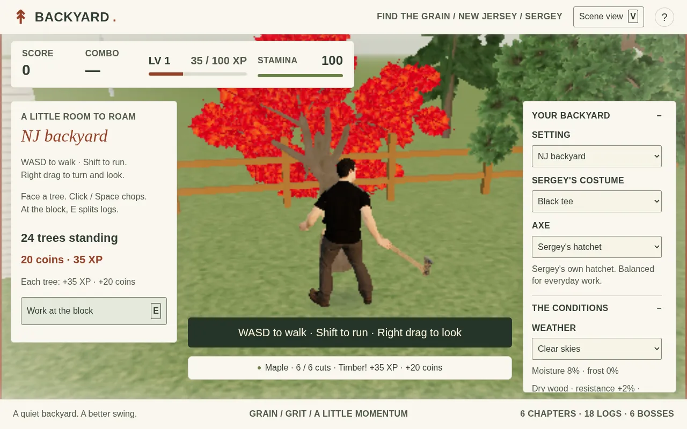
Codex CLI · v2
Live build loading…
Loading build data…
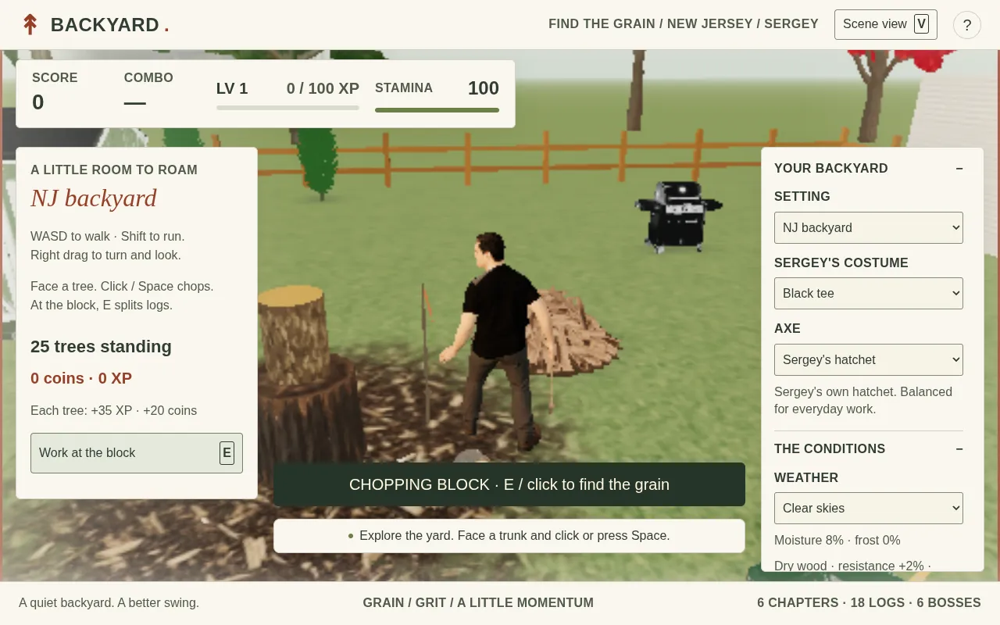
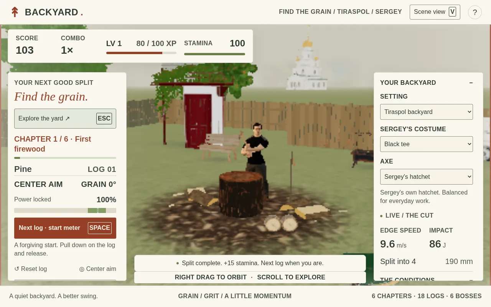
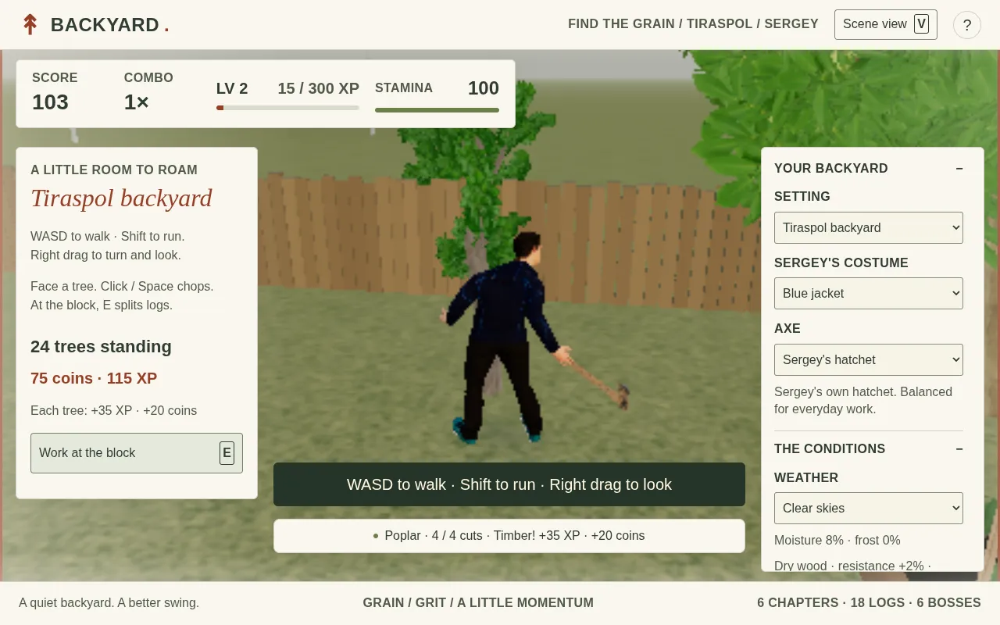
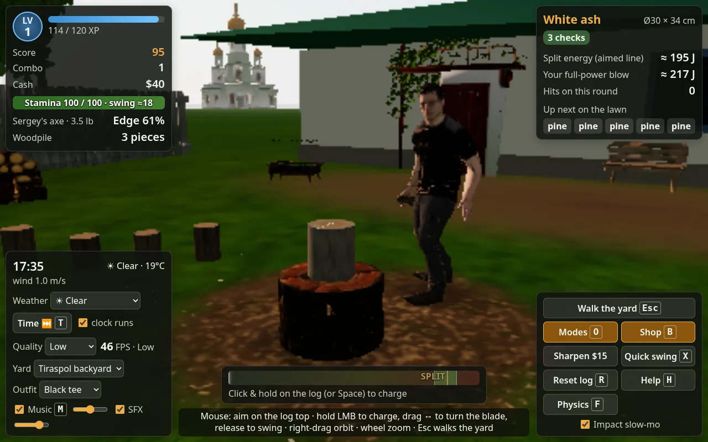
Claude Code · v2
Live build loading…
Loading build data…
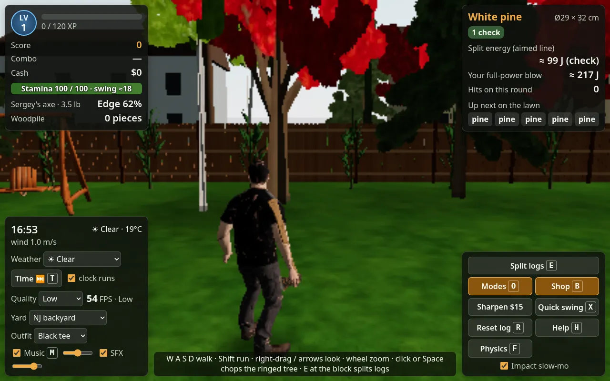
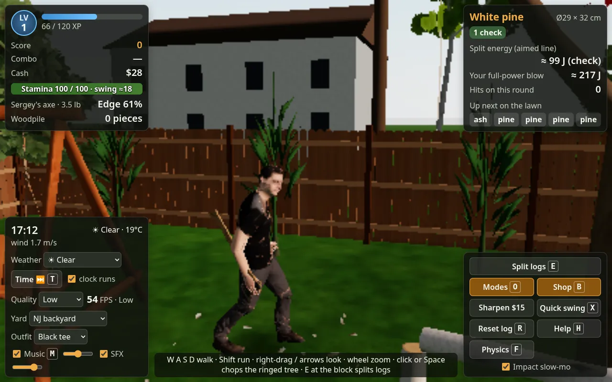
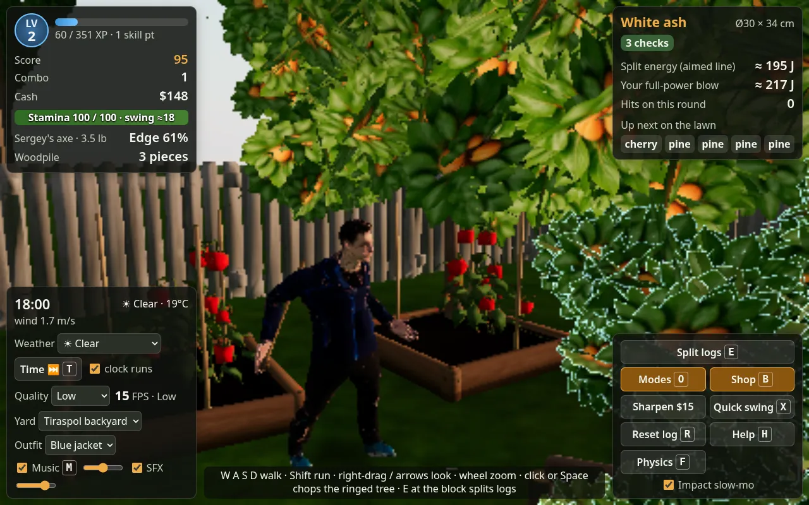
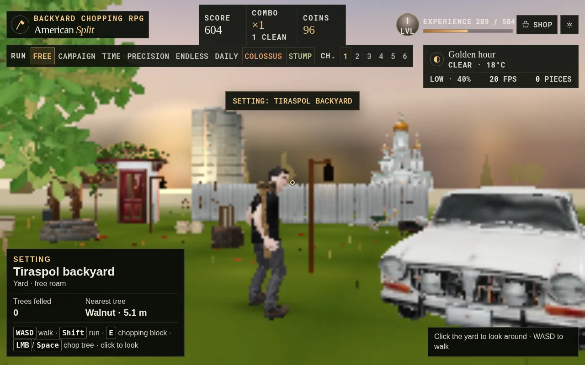
DeepSeek Harness · v2
Live build loading…
Loading build data…
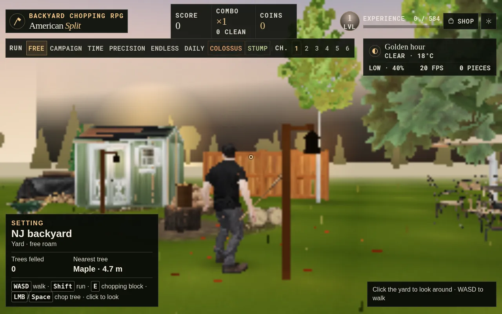
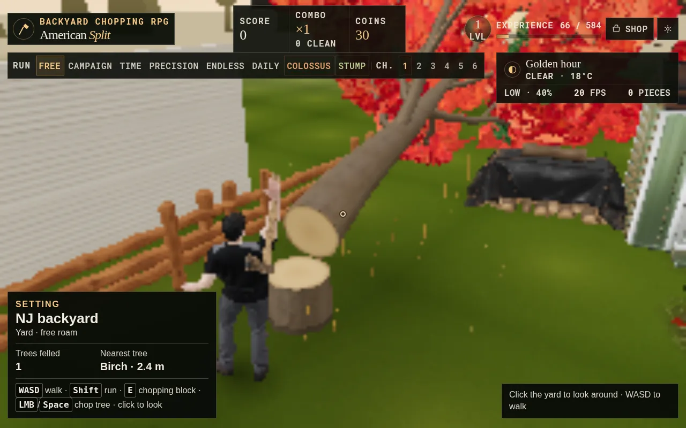
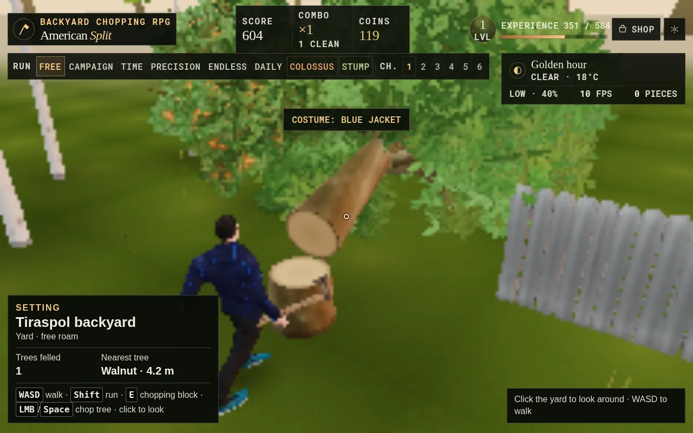
The lineup
Each harness was asked to build the same thing: a backyard log-splitting sim you play in the browser. Every game now comes in two versions: v2 (with the Assets v2 upgrade) and Classic (before it). Scores are from the Round Two video review of earlier classic (pre-assets) snapshots.
Codex CLI · gpt-6.1-sol (high reasoning)
Live build loading…
Classic build loading…
“The comeback kid, and now the most complete game.”
The score is for iteration 7 (ca82b1f), an earlier pre-assets build. Later audio and legibility updates, the Assets v2 build and co-op have not been reviewed.
Claude Code · Claude Opus 5.5 (high effort)
Live build loading…
Classic build loading…
“It understands wood best, but it needs to let you have a good time.”
The score is for iteration 1 (1faf566), an earlier pre-assets build. Later audio and legibility updates, the Assets v2 build and co-op have not been reviewed.
DeepSeek Harness · deepseek-flash
Live build loading…
Classic build loading…
“No more confetti, the most content, tripped by a soft lock.”
Not yet re-reviewed. The score is for c1204da (iteration 10), before DeepSeek’s multi-agent parallel upgrade. The v2 and co-op builds have not been reviewed either.
Fourth harness · in progress
In progress, updated as the build continues. Gemini 4 Argon (high reasoning, through Google’s Antigravity CLI) is building the same game from the same prompts in the same order as the other three, so what you can play here is a snapshot of its latest published build. This is the classic-phase build (the original brief, before any 3D assets). The Assets v2 round and the co-op and Alex round come next; when they are published, /gemini/ switches to that build and the classic build moves to /classic/gemini/. Its cost figures are est. (login-based, never billed) and are kept out of the totals for the other three. Last updated 2026-10-23 21:58:58 EDT ET.
Gemini 4 Argon (high) · Antigravity CLI
Playing now 4c14ee5 · iter-2
Not reviewed on video and not scored. Like the other builds it loads three.js from a CDN, so it needs internet access to play. WebGL 2 and a desktop mouse recommended.
| Metric | Gemini4 Argon · high |
|---|---|
| Review scores | |
| Gameplay · Graphics · Physics | not reviewed |
| Progress · driver state | |
| Finished rounds | v1, v2 |
| Running now | iter-8 |
| Playable build | 4c14ee5 · iter-2 |
| What it cost so far · est., not billed | |
| Cost (USD, est.) | est. $22.02 |
| Agent hours | 8.1 h |
| Cost per agent hour (est.) | est. $2.71/h |
| Tokens in (uncached + cached) | 4.7M + 60.6M |
| Tokens out (incl. thinking) | 651.7k |
Estimate, not a charge. Gemini 4 Argon (high) ran through the Antigravity CLI on a Google login, so nothing was billed. Dollars = measured tokens from the CLI’s own result usage x the Gemini 4 Argon list price: $2 per million uncached input, $0.10 per million cached input, $10 per million output (thinking included). Full run table and the ways this replay differs from the others are in Behind the build.
Archive
These are the pre-assets builds: frozen before the 3D asset upgrade (Meshy / Higgsfield models), so you can compare like with like. Each one is tagged pre-assets in its repo and will not change. The scores and reviews below are for earlier pre-assets snapshots of these games (listed in the review). The main Play buttons now open the Assets v2 builds.
Side by side · classic builds
These scores are for the classic (pre-assets) builds, at the snapshots listed in the “Build reviewed” row. The Assets v2 builds have not been reviewed or scored.
Every score on this site, in one table. Review scores are out of 10; the end-of-run score adds gameplay, graphics and physics for a total out of 30. Cost rows load from data/costs.json.
| Metric | Codexgpt-6.1-sol | ClaudeOpus 5.5 | DeepSeekdeepseek-flash |
|---|---|---|---|
| Round 1 review (v1) · first builds, 2 minutes each | |||
| Gameplay | 2 | 6 | 4 |
| Graphics | 6 | 7 | 7 |
| Physics accuracy | 2 | 8 | 5 |
| Overall | 3.3 | 7.0 | 5.3 |
| Round 2 review (v2) · 5 minutes of play each | |||
| Gameplay | 8 | 6 | 7 |
| Graphics | 7 | 6 | 7 |
| Physics | 8 | 9 | 5 |
| Score | 8 Great | 7 Good | 6 Okay |
| Change from Round 1 | +4.7 | ±0 | +0.7 |
| Build reviewed | iter 7 · ca82b1f | iter 1 · 1faf566 | iter 10 · c1204da |
| End of the 6-hour build run · Oct 21, 2026 | |||
| Gameplay | 8 | 8 | 7 |
| Graphics | 8 | 6 | 7 |
| Physics | 8 | 9 | 5 |
| Total | 24/30 | 23/30 | 19/30 |
| What it cost to build · whole project, incl. Assets v2 | |||
| Cost (USD) | … | … | … |
| Agent hours | … | … | … |
| Cost per agent hour | … | … | … |
Highlighted cells mark the best value in each row. These are the same totals as “The bill” and the “Behind the build” post: each mixes reported, token-priced and est. figures, so they are list-price equivalents, not invoices. See the cost section for the split per harness.
A fourth harness, Gemini 4 Argon, is still being built and is not reviewed or scored. Its progress and est. cost are in its own section, kept apart from this table.
Grain & Gravity · “Axe sims, split by the numbers.”
An IGN-style video review: about five minutes of play per game, scored on gameplay, graphics and physics. The text below condenses the review script.
This review covers the classic (pre-assets) builds, at the snapshots listed below. The Assets v2 builds (Sergey, the two backyards, walking and felling trees) came later and have not been reviewed. The Classic builds are the last pre-assets versions, not the exact reviewed snapshots, and are playable in the Classic section.
Chopperman, Round Two · 8:11 · 960×540. The music bed in the video is the channel’s, not the games’.
Codex CLI · gpt-6.1-sol · iteration 7 · ca82b1f
The comeback kid. Codex goes from 3.3 to an 8: “Biggest glow-up I’ve ever reviewed.”
Reviewed at ca82b1f (iteration 7). /codex/ is now the Assets v2 build. /classic/codex/ is the last pre-assets build, the closest playable version to what this review covers (it includes later rounds than the reviewed snapshot). Neither has been re-reviewed.
Iteration 7 ships an eighteen-log campaign over six chapters, and the axe stays in your hands. Edge speed sits around 10.5 m/s, roughly 100 joules: right where a real full swing lives. The first pull landed 24 cm off center, and the game was honest about it: a glance and a crack, no split.
Use the grain reader, line up on the pith, and the Big Pine boss falls in two pulls. A hollow oak sheds its walls one strike at a time, and the Iron Crown, three stone-bound sections at dusk, took nine strikes. You can drive a wedge into stubborn oak, buy a heavier head in the tool shed, watch slow-mo replays in the snow and chase points in Precision mode. Medium is clean low-poly autumn; High adds bloom and ambient occlusion.
Gripes: the side panels eat a third of the screen, auto-align makes the campaign a touch easy, and the console spams physics warnings on every fracture.

Claude Code · Claude Opus 5.5 · iteration 1 · 1faf566
Still the physics professor. Claude holds at a seven: smarter physics, but the new content added friction and a boss bug.
Reviewed at 1faf566 (iteration 1). /claude/ is now the Assets v2 build. /classic/claude/ is the last pre-assets build, the closest playable version to what this review covers (it includes later rounds than the reviewed snapshot). Neither has been re-reviewed.
A pine bullseye at 16 m/s carries about 190 joules against the 107 it needs, and it pops. Swing soft into oak and the bit sticks, and the crack carries over to your next swing, just like real wood. A forked cherry fights you, and the energy needed drops with every crack: 600, 530, 425, then 313 J. Waterlogged ash in the rain broke into four; iced maple glanced off the glaze. In Time Attack a maul swings slower, about 10 m/s, but hits 260 J. Heavier and slower. Correct.
The trouble is the fun. Fifty-two swings in five minutes, thirty-four of them stuck. The boss, the Old Elm, showed zero toughness left after four hits and still refused to split after nine, asking for up to 2,300 J. That’s a bug. Visuals are decent but blocky, a lamp post parks in front of the action, and in fog and frost the lumberjack turns into a wooden mannequin.
Then vs now. Round 1 gave it 7.0: “Bites, sticks, and splits like real oak.” That review was won over by a clean 11 m/s split at 182 J, 105% of what the log needed. Iteration 1 keeps the same honest energy model and adds weather, knots and ice. “Deeper, yes. Friendlier, not so much.”
DeepSeek Harness · deepseek-flash · iteration 10 · c1204da
Confetti, cancelled. DeepSeek climbs from 5.3 to a six: big improvements, held back by a stuck round.
Reviewed at c1204da. Since then DeepSeek has had a multi-agent parallel upgrade (energy/fracture physics, a campaign, graphics, audio, tests). /deepseek/ is now the Assets v2 build. /classic/deepseek/ is the last pre-assets build, the closest playable version to what this review covers (it includes later rounds than the reviewed snapshot). Neither has been re-reviewed.
The confetti is gone. Pine and birch open clean into two to four billets, the way straight grain should. Spruce shows a golden riving check to aim for, a hollow elm caves in on one blow, and hardwoods take several bites. The boss, a knotty hickory in the snow, makes you find the heartwood seam, flips to Phase Two, and a clean finish paid 3,425 points.
The Ancient Iron Stump trial at night is the best set piece here: notch three roots, the stump goes unstable, the hollow collapses, and it splits. A Twisted Colossus trial in the rain takes six honest swings a round. Medium looks cozy and warm, though the auto Low preset gets pixelated and the HUD type is heavy.
The bad news: ironwood in the wind glanced five of six centered hits. In Time Attack, in fog, a red spruce reached 0.05 bites left, then sat there for seven more hits and never split. That’s a soft lock. And underneath, the physics is still a bite counter in a lumberjack’s shirt.


The first video review played the first committed build of each game for two minutes on a CPU-only box. No in-game audio was captured. Its verdict: Claude’s splitter was the keeper, at a seven.
“Bites, sticks, and splits like real oak.”
At 11 m/s the panel read 182 J, 105% of what was needed, and the round popped into two clean halves. A lazy 7 m/s swing stuck fast with a 29% crack, and the next hit needed less energy. Gripes: the woodsman chops from off to the side, and the chips come out a little too tidy.
“Gorgeous yard. Every log is a grenade.”
A golden-hour yard with a proper overhead swing, but a full swing burst the round into 40+ wedges, and even at 15% force it still blew apart. The chips tumble and settle with honest weight; there was no grain to read and no aim to master.
“Lovely yard. The axe left for orbit.”
Then titled Backyard: A Study in Momentum. Best-dressed of the bunch, but the axe flew off at up to 29.7 m/s with no impact, every swing read “glancing”, and the log stayed intact for two full minutes.
 The bill
The bill
“Project total” covers every logged run, from the first build through Assets v2, the Codex polish pass and the co-op and voice chat rounds, including play-site design runs. Under each total, the figure is split into reported (the tool’s own number), token-priced (recorded tokens × list price, an API-equivalent figure) and est. (my estimate where tokens were not recorded). These are the same totals as in the “Behind the build” post below. “Assets v2 phase” is the part spent on the upgrade.
Loaded from the usage log in data/costs.json.
| Harness | Runs | Agent hours | Tokens in, uncached | Tokens in, cached | Tokens out | Project total (USD) | Assets v2 phase | Per agent hour |
|---|---|---|---|---|---|---|---|---|
| Loading cost data… | ||||||||
Gemini 4 Argon is not in this table or its totals: it is still being built, and its dollars are est. (login-based, not billed). Running figure so far: est. $22.02 over 8.1 agent hours. See its section.
 Behind the build
Behind the build
Every number below comes from the project’s own logs. Three kinds of figure appear and they are labelled: reported by the tool itself, token-priced (recorded token counts times the public list price, an API-equivalent figure), and est. where a run’s tokens were not recorded and I estimated it. Where nothing could be recovered the cell says n/a. All times are US Eastern.
What was really billed: Claude Code and Codex ran on subscription logins, so their dollar figures are list-price equivalents, not charges. DeepSeek was pay-as-you-go, and its balance fell by $8.92 (from $49.66 to $40.74, checked 22:25 on Oct 22, before the last docs run had finished). Including the co-op and voice chat rounds, DeepSeek’s balance had fallen by $9.87 in total (to $39.79, checked 14:09 on Oct 23, as its voice chat run was finishing), inside its raised $15 budget. The image, 3D and voice services are listed separately below.
| Harness | Runs | Agent time | Input, uncached | Input, cached | Output | Reported | Token-priced | Est. | Total (USD) |
|---|---|---|---|---|---|---|---|---|---|
| Claude Code | 17 | 15.24 h | 2,086 | 220,166,240 | 1,583,388 | $98.17 | $11.54 | est. $7.15 | $116.85 |
| Codex CLI | 21 | 16.14 h | 3,243,650 | 98,526,720 | 773,816 | – | $24.08 | est. $0.80 | $24.87 |
| DeepSeek Harness | 60 | 30.46 h | 7,635,229 | 1,039,278,206 | 4,149,668 | – | $9.55 | est. $0.29 | $9.84 |
| All three | 98 | 61.84 h | 10,880,965 | 1,357,971,166 | 6,506,872 | $98.17 | $45.16 | est. $8.24 | $151.57 |
Token columns add up only runs whose tokens were recorded (96 of 98 runs; the rest are in the “Est.” column or have no tokens). Claude also wrote 4,248,777 cache-write tokens. Claude’s total includes two play-site design runs ($8.38) and the channel-art kit ($6.15); without the site runs it is $108.47. DeepSeek’s total is token-priced ($9.55) plus a $0.29 killed pass read from the balance counter; the measured balance drop was $8.92 by Oct 22 22:25 ET and $9.87 by Oct 23 14:09 ET, after the co-op and voice chat rounds. Codex’s total includes est. $0.80 for iteration 7, whose token counts were not recorded.
| Service | What it made | Amount | Basis |
|---|---|---|---|
| Meshy | 82 tasks: 28 preview, 28 refine, 7 image-to-3d, 6 multi-image-to-3d, 6 rigging, 6 animation, 1 retexture | 853 credits | reported by the API (credits). Dollars not logged: n/a |
| Higgsfield | 41 generations: 37 stills (grok-imagine-image 2.0) and 4 trailer clips (Kling v2.5 turbo) | est. 70.72 credits, est. $4.42 | est. from the price table in the spend log |
| OpenAI image API | 39 calls (gpt-image-2.5): Sergey views, key art; 259,945 tokens | $3.26 | token-priced: usage tokens times published per-token price |
| Codex built-in image tool | 5 face-accuracy test images | est. $0.83 | plan quota, no charge reported; est. at about $0.165 per image as noted in the log |
| ElevenLabs | Hank Harvey voiceover: intro script about 1,160 characters, review script about 5,265 characters | n/a | not logged: the voice spend was not recorded, so no dollar figure is given |
| Dollar-valued assets | OpenAI + Higgsfield + Codex image tool | est. $8.51 | Meshy and ElevenLabs excluded (no dollars logged) |
Grand total, mixed basis: est. $160.07 = harness runs $151.57 + dollar-valued assets est. $8.51. It mixes list-price equivalents with measured spend, so read it as a size estimate, not an invoice. The spend log covers Oct 22 12:44 to Oct 23 00:42 ET.
Oct 21, the first builds. Claude Code, Codex CLI and the DeepSeek Harness got the same brief at 14:11 ET: a backyard axe-chopping game for the browser in three.js. DeepSeek and Codex had a working v1 in 22 and 17 minutes. Claude’s v1 took 31 minutes and was cut off by an operator error during its final self-test, so it shipped without a README and with the swing stuck in its windup. Two accidental early starts of a second version were aborted and discarded. Round 1 review scores were Codex 3.3, Claude 7.0 and DeepSeek 5.3.
Iterations and the Round 2 review. Each harness then ran many improvement passes: Codex iter-1 to iter-10, Claude iter-1 to iter-3 (its iter-2 ran about 2 hours and produced no changes, so it was reverted), and DeepSeek iter-1 to iter-27 including a multi-agent parallel upgrade in three rounds (content, physics, graphics, audio and polish streams). A box restart at 02:13 ET on Oct 22 interrupted several runs and their partial work was kept. In DeepSeek’s third round some streams failed a frame-rate gate against main (for example 1.4, 3.0, 5.8 and 9.8 FPS against 60.2 FPS in software rendering) and were fixed or rejected before merging. Round 2 scores were Codex 8, Claude 7 and DeepSeek 6.
Sound, music and the legibility pass. Sound effects and music were added by each harness. A legibility pass followed (Claude iter-3, Codex iter-10, DeepSeek iter-27), after the rule that all in-game and site text must be easy to read: body text at least 16 px, HUD numbers at least 20 px, with AA contrast. Claude Code also designed the channel art and this play site.
Archive of the classic builds. Before any new assets went in, each repo got a snapshot tag (snapshot-2026-10-22) and a pre-assets branch, and the classic builds are kept as separate repos and in the site’s /classic/ folders. That keeps the comparison fair.
The asset pack and Sergey. The lumberjack is named Sergey and has two costumes, a tee and a blue jacket. The shared pack came from Meshy (props, trees, the shed, fences, axes and the rigged, animated character), Higgsfield (early stills and trailer clips) and GPT image generation. Higgsfield’s faces were a bit inaccurate against the source photos, so Sergey was rebuilt from new GPT front, side and back views, and all key art was redone with GPT. The pack gave each game two settings: a New Jersey backyard and a Tiraspol backyard with a cathedral behind it, plus an upgraded trees pack (tree v2) and four axes.
The Assets v2 upgrade. On Oct 22 at 14:37 ET all three harnesses got the identical brief to build the pack into their own games, add walking and let Sergey fell the surrounding trees. All three merged and passed the final automated check in headless Chrome with software rendering and no GPU. The run tables below list every attempt.
Co-op and a second character. Shortly after midnight on Oct 23 all three got the identical co-op brief: two-player online co-op over peer-to-peer WebRTC (PeerJS, with a 5-character room code and the host deciding every tree hit), plus Alex as a second playable character from the shared pack. Each did one build run and one documentation run on a separate coop-v1 branch, and all three passed an automated two-player check, run in a single page over a loopback link.
Proximity voice chat. Next came an identical voice chat brief: opt-in voice that fades with the distance between the two players, with microphone access only after you turn it on. Claude finished it at 05:42 ET. The Codex and DeepSeek runs were interrupted by the box restart at about 06:01 ET and re-run that afternoon, passing at 14:13 and 14:18 ET. All three passed the voice steps of the co-op check and the voice module’s 360 unit checks. After one more check on the merged code, the co-op and voice builds were merged to main as coop-voice-release on the evening of Oct 23 and published here. They count in the totals above.
| Harness | Build attempts | FPS NJ low / Tiraspol low / Tiraspol high | Hits to fell a tree | First load | Merged as |
|---|---|---|---|---|---|
| Claude Code | 3 build attempts (attempt 2 failed the frame-rate check, attempt 3 fixed it) + 1 docs run | 45.8 / 49.3 / 0.5 | 3 | 6.5 s | f84f19b (iter-4) |
| Codex CLI | 2 build attempts (both passed) + 1 docs run + 1 extra polish pass (passed) | 49.9 / 36.7 / 14.4 | 6 | 4.1 s | d9bbf61 (iter-11 + polish-1) |
| DeepSeek Harness | 2 build attempts (both passed) + 1 docs run | 19 / 25.9 / 1.7 | 10 | 11.3 s | 2998b40 (iter-28) |
FPS are software-rendering figures from the final headless-Chrome check on the build machine (Codex: the check after its polish pass, tag polish-1). They are far below what a real graphics card gives, and no real GPU was tested.
Each table lists every logged run in order. Open one to see it. Cost basis is shown per row: reported, token-priced or est.. “Cached” is input served from the prompt cache.
| Run | Started (ET) | Wall | Input | Cached | Output | Cost | Basis | Result |
|---|---|---|---|---|---|---|---|---|
| v1 | 10-21 14:11 | 31m13s | 72 | 5,194,901 | 174,416 | $6.35 | token-priced | v1 built; run cut off by operator error at 14:42 during final self-test (no README); swing… |
| channel-art | 10-21 14:49 | 28m44s | 122 | 8,852,657 | 132,942 | $6.15 | reported | channel art kit built (Grain & Gravity) |
| v2 | 10-21 14:47 | 1h13m | 256 | 41,432,485 | 278,713 | $17.55 | reported | v2 ok |
| iter-1 | 10-21 16:01 | 2h40m | 86 | 6,160,827 | 74,125 | $6.08 | reported | ok |
| iter-2 | 10-21 18:42 | 2h05m | 26 | 997,235 | 9,374 | $1.34 | token-priced | reverted: no changes produced |
| iter-2 (audio, part 1) | 10-22 02:11 | 16m44s | 60 | 3,746,005 | 82,747 | $3.84 | token-priced | interrupted by box restart; work kept |
| iter-2 (audio, resumed) | 10-22 02:40 | 6m01s | 34 | 3,470,306 | 13,832 | $1.18 | reported | ok |
| iter-3 (legibility) | 10-22 12:37 | 13m21s | 78 | 4,071,236 | 50,109 | $2.93 | reported | ok; tests n/a |
| play-site design (site, not game work) | 10-22 12:39 | 21m23s | 78 | 5,464,949 | 106,290 | $4.92 | reported | done |
| assets-v2 attempt-1 | 10-22 14:37 | 57m14s | 282 | 50,728,150 | 210,115 | $18.39 | reported | verify ok; fps low NJ/Tir 8.1/9.1; tests n/a |
| assets-v2 attempt-2 | 10-22 15:38 | 41m34s | 214 | 20,781,699 | 87,688 | $8.11 | reported | verify FAIL; fps low NJ/Tir 4.9/7; tests n/a; fps: low-quality NJ fps 4.9 < 8 in software… |
| assets-v2 attempt-3 | 10-22 21:15 | 40m42s | 214 | 17,578,361 | 78,280 | $7.15 | reported | verify ok; fps low NJ/Tir 34.6/29.9; tests n/a |
| assets-v2 docs | 10-22 21:59 | 8m03s | 74 | 8,087,975 | 52,342 | $5.00 | reported | docs; verify ok |
| play-site assets-v2 update (site, not game work) | 10-22 23:36 | 28m06s | 86 | 5,621,568 | 50,641 | $3.46 | reported | done |
| coop-v1 attempt-1 | 10-23 00:52 | 1h01m | 186 | 25,036,038 | 111,498 | $10.11 | reported | verify ok (v2 True, coop True); fps NJ/Tir 46.8/30.9; tests n/a |
| coop-v1 docs | 10-23 01:58 | 3h05m | 112 | 6,860,631 | 39,948 | $4.17 | reported | docs; final verify ok |
| coop-v1 voice-attempt-1 | 10-23 05:22 | 14m31s | 106 | 6,081,217 | 30,328 | $2.97 | reported | verify ok (v2 True, coop --voice True); fps NJ/Tir 23.7/29.7; tests n/a; module pass 360 checks |
| assets-v2 attempt-3 (first pass, killed) | 10-22 16:24 | n/a | n/a | n/a | n/a | est. $7.15 | est. | killed mid-run at about 21:14 ET; unverified work saved as WIP commit e02702d [Tokens not recorded (the run was killed). Cost est. at about the same as the resumed attempt-3 pass ($7.15).] |
| Run | Started (ET) | Wall | Input | Cached | Output | Cost | Basis | Result |
|---|---|---|---|---|---|---|---|---|
| v1 | 10-21 14:15 | 17m26s | 86,774 | 1,518,080 | 43,360 | $0.76 | token-priced | v1 built; verified ok (split unreliable) |
| v2-aborted | 10-21 14:43 | 1m12s | n/a | n/a | n/a | n/a (est. < $0.05) | est. | operator aborted to add new user directive; changes discarded [Aborted after 72 s; tokens not recorded. Cost est. under $0.05, not added to totals.] |
| v2 | 10-21 14:47 | 19m52s | 62,084 | 2,084,736 | 49,597 | $0.83 | token-priced | v2 ok |
| iter-1 | 10-21 15:07 | 17m26s | 124,589 | 2,918,912 | 44,735 | $0.99 | token-priced | ok |
| iter-2 | 10-21 15:25 | 10m26s | 118,609 | 2,146,304 | 27,201 | $0.72 | token-priced | ok |
| iter-3 | 10-21 15:36 | 10m37s | 117,914 | 1,716,608 | 27,665 | $0.68 | token-priced | ok |
| iter-4 | 10-21 15:47 | 12m20s | 101,617 | 2,515,968 | 29,823 | $0.75 | token-priced | ok |
| iter-5 | 10-21 16:00 | 10m29s | 95,798 | 2,013,184 | 26,527 | $0.66 | token-priced | ok |
| iter-6 | 10-21 16:11 | 2h28m | 241,225 | 2,473,984 | 23,280 | $0.96 | token-priced | ok |
| iter-7 | 10-21 18:39 | 2h07m | est. 133,292 | est. 2,297,493 | est. 29,872 | est. $0.80 | est. | ok [No turn.completed event was recorded. Tokens and cost are est.: the mean of Codex iter-1 to iter-6.] |
| iter-8 (audio, part 1) | 10-22 02:11 | 16m44s | 75,613 | 1,436,928 | 28,278 | $0.58 | token-priced | interrupted by box restart; work kept |
| iter-8 (audio, resumed) | 10-22 02:40 | 6m30s | 24,444 | 1,191,424 | 10,364 | $0.27 | token-priced | ok |
| iter-9 (hull winding fix) | 10-22 03:08 | 6m34s | 21,552 | 1,492,864 | 9,627 | $0.29 | token-priced | ok |
| iter-10 (legibility) | 10-22 12:37 | 17m00s | 83,472 | 2,768,128 | 36,391 | $0.81 | token-priced | ok; tests pass |
| assets-v2 attempt-1 | 10-22 14:37 | 1h13m | 433,781 | 20,106,752 | 125,693 | $4.14 | token-priced | verify ok; fps low NJ/Tir 55.2/43.2; tests pass |
| assets-v2 attempt-2 | 10-22 15:54 | 1h31m | 749,398 | 15,661,440 | 75,780 | $3.82 | token-priced | verify ok; fps low NJ/Tir 38.4/34.2; tests pass |
| assets-v2 docs | 10-22 17:29 | 1h23m | 107,362 | 1,612,160 | 18,565 | $0.56 | token-priced | docs; verify ok |
| assets-v2 polish pass (extra, Codex) | 10-23 00:27 | 1h13m | 407,119 | 15,892,096 | 106,897 | $3.47 | token-priced | verify ok; fps low NJ/Tir/High 49.9/36.7/14.4; tests pass |
| coop-v1 attempt-1 | 10-23 01:46 | 3h17m | 158,747 | 12,618,112 | 45,455 | $2.03 | token-priced | verify ok (v2 True, coop True); fps NJ/Tir 29.9/25.6; tests pass |
| coop-v1 docs | 10-23 05:08 | 11m51s | 121,747 | 2,665,856 | 20,761 | $0.72 | token-priced | docs; final verify ok |
| coop-v1 voice-attempt-1 | 10-23 13:53 | 15m02s | 111,805 | 5,693,184 | 23,817 | $1.03 | token-priced | verify ok (v2 True, coop --voice True); fps NJ/Tir 39.6/25.2; tests pass ; module pass 360… |
| Run | Started (ET) | Wall | Input | Cached | Output | Cost | Basis | Result |
|---|---|---|---|---|---|---|---|---|
| v1 | 10-21 14:11 | 22m26s | 47,526 | 10,919,680 | 169,838 | $0.14 | token-priced | v1 built; verified ok |
| v2-aborted | 10-21 14:41 | 3m03s | 76,611 | 763,520 | 11,944 | $0.02 | token-priced | operator aborted (accidental early start); changes discarded |
| v2-aborted2 | 10-21 14:43 | 1m12s | 58,824 | 582,144 | 4,789 | $0.01 | token-priced | operator aborted to add new user directive; changes discarded |
| v2 | 10-21 14:47 | 57m02s | 165,651 | 65,138,176 | 353,390 | $0.43 | token-priced | v2 ok |
| iter-1 | 10-21 15:44 | 10m57s | 101,406 | 12,942,464 | 66,788 | $0.09 | token-priced | ok |
| iter-2 | 10-21 15:56 | 15m26s | 132,987 | 23,234,048 | 79,782 | $0.14 | token-priced | ok |
| iter-3 | 10-21 16:11 | 4h40m | 154,934 | 30,852,096 | 89,767 | $0.17 | token-priced | ok |
| iter-4 | 10-21 20:52 | 1h10m | 147,374 | 12,524,672 | 67,283 | $0.13 | token-priced | ok |
| iter-5 | 10-21 22:03 | 16m58s | 145,818 | 18,084,352 | 78,888 | $0.25 | token-priced | ok |
| iter-6 | 10-21 22:21 | 14m36s | 123,857 | 16,242,816 | 61,730 | $0.21 | token-priced | ok |
| iter-7 | 10-21 22:36 | 17m49s | 167,953 | 31,870,848 | 82,452 | $0.34 | token-priced | ok |
| iter-8 | 10-21 22:54 | 49m46s | 237,580 | 32,792,446 | 93,261 | $0.38 | token-priced | ok |
| iter-9 | 10-21 23:44 | 18m00s | 145,037 | 26,260,992 | 94,255 | $0.30 | token-priced | ok |
| iter-10 | 10-22 00:03 | 20m09s | 193,783 | 32,834,816 | 74,287 | $0.17 | token-priced | ok |
| iter-11 | 10-22 00:23 | 1h10m | 141,637 | 17,169,152 | 73,730 | $0.12 | token-priced | ok |
| iter-12 | 10-22 01:35 | 10m40s | 97,337 | 8,035,712 | 50,781 | $0.07 | token-priced | ok |
| iter-13 | 10-22 01:46 | 19m19s | 175,867 | 29,982,592 | 81,363 | $0.22 | token-priced | ok (finished after old driver stopped) |
| p1-physics-interrupted | 10-22 02:13 | 0m00s | 100,059 | 8,762,624 | 52,212 | $0.15 | token-priced | interrupted by box restart; partial work kept as WIP |
| p1-content-interrupted | 10-22 02:13 | 0m00s | 182,647 | 25,157,248 | 62,523 | $0.28 | token-priced | interrupted by box restart; partial work kept as WIP |
| p1-graphics-interrupted | 10-22 02:13 | 0m00s | 115,679 | 9,424,128 | 43,032 | $0.14 | token-priced | interrupted by box restart; partial work kept as WIP |
| p1-audio-interrupted | 10-22 02:13 | 0m00s | 106,119 | 13,767,296 | 77,003 | $0.21 | token-priced | interrupted by box restart; partial work kept as WIP |
| p1-polish-interrupted | 10-22 02:13 | 0m00s | 140,387 | 12,004,352 | 46,814 | $0.17 | token-priced | interrupted by box restart; partial work kept as WIP |
| p1-audio-resume | 10-22 03:00 | 16m37s | 126,690 | 10,259,328 | 60,067 | $0.17 | token-priced | branch ok |
| p1-content-resume | 10-22 02:59 | 27m20s | 154,170 | 37,693,696 | 109,226 | $0.40 | token-priced | branch ok |
| p1-physics-resume | 10-22 02:59 | 19m18s | 107,558 | 11,968,384 | 65,833 | $0.18 | token-priced | verify failed, fix-up attempted: frame rate regression: 9.1 FPS vs 23.9 FPS on main (same… |
| p1-physics-resume-fix | 10-22 03:19 | 13m54s | 91,539 | 6,031,488 | 30,873 | $0.10 | token-priced | fixed |
| p1-polish-resume | 10-22 03:00 | 18m12s | 161,866 | 26,765,440 | 70,131 | $0.29 | token-priced | verify failed, fix-up attempted: frame rate regression: 3.9 FPS vs 23.9 FPS on main (same… |
| p1-polish-resume-fix | 10-22 03:19 | 17m18s | 87,607 | 6,407,936 | 43,465 | $0.12 | token-priced | fixed |
| p1-graphics-resume | 10-22 03:00 | 28m52s | 124,009 | 11,797,376 | 79,013 | $0.20 | token-priced | verify failed, fix-up attempted: frame rate regression: 9.0 FPS vs 23.9 FPS on main (same… |
| p1-graphics-resume-fix | 10-22 03:29 | 7h35m | 100,714 | 10,282,752 | 57,127 | $0.12 | token-priced | fixed |
| iter-15-merge-content | 10-22 11:06 | 2m00s | 32,457 | 1,061,120 | 11,875 | $0.02 | token-priced | ok |
| iter-16-merge-graphics | 10-22 11:08 | 1m37s | 36,929 | 726,016 | 12,424 | $0.02 | token-priced | ok |
| iter-17-merge-audio | 10-22 11:11 | 2m12s | 45,923 | 1,249,280 | 15,675 | $0.02 | token-priced | ok |
| iter-18-merge-polish | 10-22 11:14 | 3m10s | 82,746 | 3,156,992 | 15,417 | $0.03 | token-priced | ok |
| p2-content | 10-22 11:20 | 7m36s | 127,333 | 8,253,440 | 43,524 | $0.07 | token-priced | branch ok |
| p2-physics | 10-22 11:19 | 10m56s | 122,278 | 17,364,352 | 62,343 | $0.11 | token-priced | branch ok |
| p2-polish | 10-22 11:21 | 13m58s | 126,511 | 10,256,768 | 53,436 | $0.08 | token-priced | branch ok |
| p2-audio | 10-22 11:20 | 14m44s | 110,824 | 15,188,096 | 75,099 | $0.11 | token-priced | branch ok |
| p2-graphics | 10-22 11:20 | 21m34s | 135,448 | 11,219,328 | 56,509 | $0.09 | token-priced | verify failed, fix-up attempted: console/page errors (software-GL WebGL context) |
| p2-graphics-fix | 10-22 11:42 | 10m36s | 142,752 | 15,239,680 | 77,751 | $0.11 | token-priced | fixed |
| iter-19-fix-physics | 10-22 11:55 | 8m18s | 88,732 | 5,109,888 | 32,252 | $0.05 | token-priced | ok |
| iter-21-merge-graphics | 10-22 12:05 | 9m08s | 63,733 | 2,029,184 | 14,963 | $0.02 | token-priced | ok |
| iter-23-merge-polish | 10-22 12:15 | 1m08s | 18,409 | 246,528 | 5,811 | $0.01 | token-priced | ok |
| p3-content | 10-22 12:35 | 16m06s | 137,297 | 20,940,544 | 60,855 | $0.12 | token-priced | branch ok |
| p3-graphics | 10-22 12:35 | 19m14s | 128,592 | 17,712,896 | 63,413 | $0.11 | token-priced | branch ok |
| p3-physics | 10-22 12:34 | 12m04s | 103,686 | 11,875,456 | 52,654 | $0.08 | token-priced | verify failed, fix-up attempted: frame rate regression: 5.8 FPS vs 60.2 FPS on main (same… |
| p3-physics-fix | 10-22 12:47 | 22m32s | 92,660 | 9,913,728 | 64,367 | $0.08 | token-priced | still failing: frame rate regression: 9.8 FPS vs 60.2 FPS on main (same machine, software GL) |
| p3-audio | 10-22 12:35 | 12m14s | 116,307 | 13,201,536 | 49,912 | $0.09 | token-priced | verify failed, fix-up attempted: frame rate regression: 3.0 FPS vs 60.2 FPS on main (same… |
| p3-audio-fix | 10-22 12:49 | 27m18s | 138,927 | 12,192,256 | 63,640 | $0.10 | token-priced | fixed |
| p3-polish | 10-22 12:36 | 10m51s | 114,912 | 13,369,600 | 49,304 | $0.09 | token-priced | verify failed, fix-up attempted: frame rate regression: 1.4 FPS vs 60.2 FPS on main (same… |
| p3-polish-fix | 10-22 12:48 | 30m08s | 124,016 | 13,431,296 | 84,407 | $0.11 | token-priced | fixed |
| iter-24-fix-content | 10-22 13:20 | 14m31s | 182,221 | 14,321,408 | 35,206 | $0.09 | token-priced | merge rejected: frame rate regression: 8.0 FPS vs 60.2 FPS on main (same machine, software GL) |
| iter-26-merge-polish | 10-22 13:37 | 1m32s | 25,046 | 317,312 | 7,753 | $0.01 | token-priced | ok |
| iter-27 (legibility) | 10-22 13:41 | 38m15s | 127,088 | 14,476,928 | 98,561 | $0.12 | token-priced | ok; tests pass |
| assets-v2 attempt-1 | 10-22 14:37 | 1h23m | 310,830 | 113,989,504 | 278,775 | $0.56 | token-priced | verify ok; fps low NJ/Tir 10.7/16.4; tests pass |
| assets-v2 attempt-2 | 10-22 21:15 | 53m43s | 242,655 | 38,180,096 | 153,095 | $0.49 | token-priced | verify ok; fps low NJ/Tir 18.8/26.6; tests pass |
| assets-v2 docs | 10-22 22:14 | 11m48s | 239,872 | 16,701,952 | 50,550 | $0.23 | token-priced | docs; verify ok |
| coop-v1 attempt-1 | 10-23 04:46 | 44m15s | 224,784 | 52,753,792 | 138,824 | $0.55 | token-priced | verify ok (v2 True, coop True); fps NJ/Tir 10.8/12.7; tests pass |
| coop-v1 docs | 10-23 05:35 | 9m56s | 174,496 | 13,926,144 | 40,401 | $0.18 | token-priced | docs; final verify ok |
| coop-v1 voice-attempt-1 | 10-23 13:53 | 17m07s | 104,539 | 10,320,512 | 49,225 | $0.08 | token-priced | verify ok (v2 True, coop --voice True); fps NJ/Tir 17.1/23.8; tests pass ; module pass 360… |
| assets-v2 attempt-2 (first pass, killed) | 10-22 16:04 | n/a | n/a | n/a | n/a | $0.29 | measured via balance | killed mid-run at about 21:14 ET; unverified work saved as WIP commit b4431ff [Tokens not recorded. $0.29 is the rise of the driver spend counter (balance based) from $8.0918 at 16:04 to $8.3818 at 21:15.] |
In progress, updated as the build continues. Gemini 4 Argon (high reasoning, through the Antigravity CLI) is building the same game from the same prompts in the same order. It is not included in any total above. Estimate, not a charge. Gemini 4 Argon (high) ran through the Antigravity CLI on a Google login, so nothing was billed. Dollars = measured tokens from the CLI’s own result usage x the Gemini 4 Argon list price: $2 per million uncached input, $0.10 per million cached input, $10 per million output (thinking included). Driver state as of 2026-10-23 21:58:58 EDT ET: phase iter-8. Now playing: the classic-phase build 4c14ee5 (iter-2), before any 3D assets. The Assets v2 round has not finished yet.
| Harness | Runs | Agent time | Input, uncached | Input, cached | Output | Est. total (USD) |
|---|---|---|---|---|---|---|
| Gemini 4 Argon | 10 | 8.11 h | 4,721,979 | 60,571,571 | 651,728 | est. $22.02 |
Output includes thinking tokens (125,444 so far). This is a running figure and grows as each round finishes.
| Run | Started (ET) | Wall | Input | Cached | Output | Cost | Basis | Result |
|---|---|---|---|---|---|---|---|---|
| v1 | 10-23 04:59 | 17m11s | 174,590 | 1,470,609 | 74,380 | est. $1.24 | est. | v1 built, pushed |
| v2 | 10-23 05:31 | 26m12s | 249,647 | 6,364,549 | 118,398 | est. $2.32 | est. | v2 ok, pushed |
| iter-1 | 10-23 13:53 | 20m26s | 285,108 | 7,631,636 | 72,459 | est. $2.06 | est. | ok, pushed |
| iter-2 | 10-23 14:18 | 18m08s | 285,206 | 5,819,265 | 62,949 | est. $1.78 | est. | ok, pushed |
| iter-3 | 10-23 14:36 | 2h26m | 820,402 | 7,548,511 | 83,708 | est. $3.23 | est. | ok, pushed |
| iter-4 | 10-23 17:03 | 2h05m | 540,340 | 5,895,917 | 50,464 | est. $2.17 | est. | ok, pushed |
| iter-5 | 10-23 19:09 | 4m41s | 177,169 | 1,216,995 | 12,971 | est. $0.61 | est. | ok, pushed |
| iter-6 (audio) quota-blocked | 10-23 19:14 | 21m26s | 181,849 | 466,979 | 8,867 | est. $0.50 | est. | quota exhausted (Antigravity individual quota, resets ~2026-10-30 04:53 EDT); 0 files changed;… |
| iter-6 | 10-23 19:53 | 27m35s | 842,551 | 10,020,769 | 69,431 | est. $3.38 | est. | ok, pushed |
| iter-7 | 10-23 20:21 | 1h19m | 1,165,117 | 14,136,341 | 98,101 | est. $4.72 | est. | ok, pushed |
Where Gemini’s replay differs from the other three:
Sources: the project usage log (usage.csv), the Assets v2 state files and logs, the asset spend log, and for Gemini its own usage log (usage-gemini.csv) and state file. Generated by tools/build_blog.py. No keys or secrets appear in any of them.